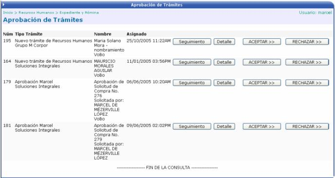
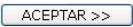
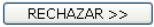
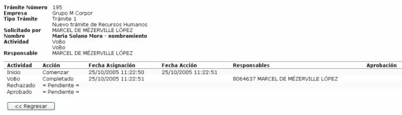
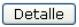
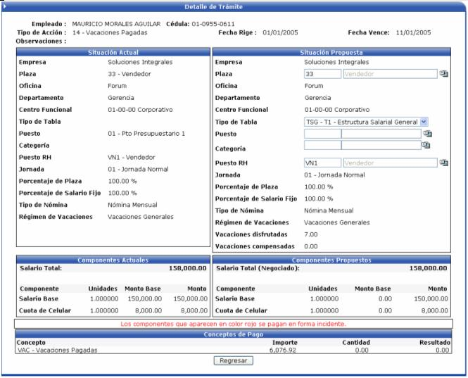

En esta opción el usuario podrá aprobar los trámites que se generan desde las acciones de personal. Cabe aclarar que los trámites que van a aparecer en esta opción son los que están asociados al usuario encargado de aprobar los trámites:

Para aprobar un trámite se presiona el botón

. Para rechazarlo se presiona
.Si se quiere ver la ruta del trámite se presiona el botón de :

Para ver el detalle del trámite se presiona

y se presenta la información de la acción a tramitar:
